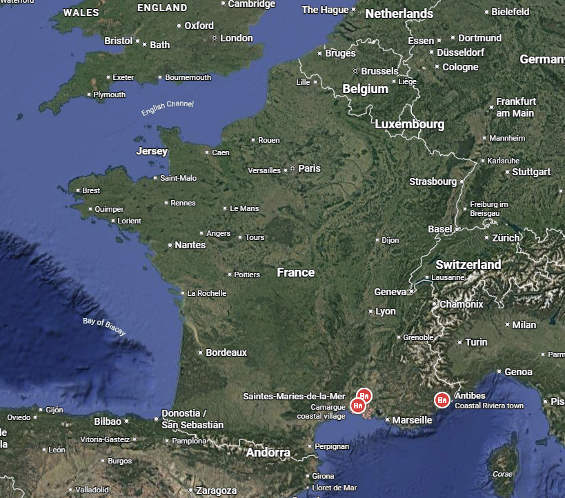
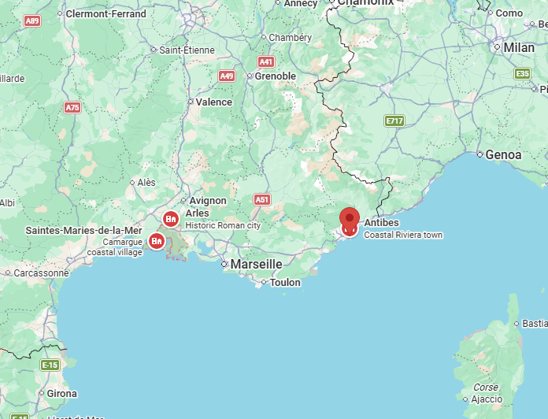

Home base
Old-town apartment
Our Antibes place is tucked in the pedestrian streets, close to snacks, boats, gelato, and evening wandering.

Three home bases, lots of water, Roman ruins you can climb, painting spots to hunt for, pink birds, and horses on the beach.
We fly into Nice, start on the Riviera, then move west into Provence and finish down in the Camargue by the sea.


First stop: sleep in the old town, swim by the ramparts, ride a boat to an island, and see Picasso art inside a castle.
Our Antibes place is tucked in the pedestrian streets, close to snacks, boats, gelato, and evening wandering.

A sandy little cove right next to town. Good first swim after the plane.

The Picasso Museum is in Chateau Grimaldi, with sea views right outside.

Short ferry, pine forest, coves, and the fort from the Man in the Iron Mask story.

Fort Carre has ramparts, harbor views, and a shape that looks like it was drawn for a treasure map.

Little lanes, shutters, flowers, and corners that look like they should have secret bakeries.

Rows of sailboats and giant yachts, with Fort Carre watching over the harbor.

A walk along the old walls where the town, sea, and beach all stack together.
The Roman-and-Van-Gogh stop: an amphitheatre, underground tunnels, yellow cafe, and a painting hunt through town.

Our Arles house is walking distance to the arena and Place du Forum, so this leg should feel easy on foot.

The cryptoporticus is a cool, shadowy set of Roman galleries under the old forum. Very solid kid-wow.

Walk the seats of a real Roman amphitheatre and imagine the crowd roaring.

Use the painting like a treasure map, then stand in Place du Forum and compare the scene.

Espace Van Gogh has a courtyard garden restored to look like the scene he painted there.

Stone streets, shutters, and small squares between the Roman spots and Van Gogh places.

The evening square for dinner, people-watching, and checking off the Van Gogh cafe scene.

An old Roman cemetery path that Van Gogh painted, with stone sarcophagi lining the lane.
The relaxed beach-and-wildlife chapter: ping-pong at the house, flamingos, white horses, and sandy beach days.

The Saintes-Maries house has a playroom garage with a ping-pong table. Big rainy-hour / hot-afternoon win.

At Pont de Gau, boardwalks go right through flamingo ponds. Pink birds, loud calls, big wings.
Camargue horses are famous: white, sturdy, and used by local gardians around the wetlands.

The easy everyday beach, close enough to go when everyone just wants sand and water.

Aigues-Mortes has complete ramparts, plus salt flats nearby that can turn pink in the sun.

Wide sand and soft light if anyone wakes up early enough to beat the heat.

Walk from the house to the beach, the church, the harbor, and back for another ping-pong round.

A slow Petit Rhone cruise for spotting horses, bulls, birds, and marshland from the water.
Not extra home bases, just good places to break up the drives.

White cliffs, bright water, and the kind of view that makes the boat stop feel worth it.

Lunch by Cassis port, then a short boat ride or walk for another look at the rocky coves.

Picnic on the bank, then cool off in the Gardon with the huge Roman aqueduct in the background.

Rocky beach, shallow river, and a 2,000-year-old bridge towering over the whole scene.